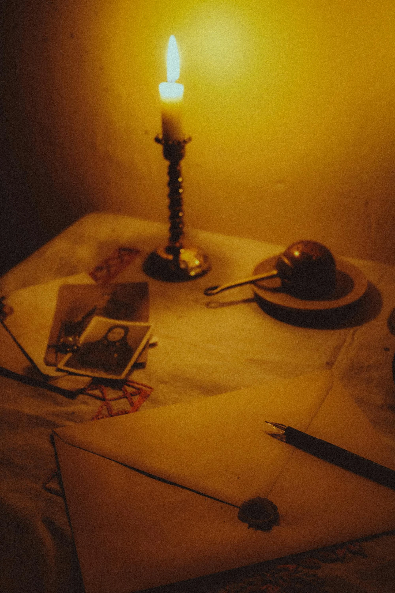

Introduction
Il existe des lieux que nous n'avons jamais connus et qui pourtant nous semblent familiers.
Une maison aperçue au détour d'un chemin. Une photographie trouvée dans un marché ancien. Un livre oublié au fond d'une bibliothèque. Certains objets paraissent porter avec eux une présence discrète, presque imperceptible, qui dépasse leur simple existence matérielle.
Nous savons qu'il ne s'agit que de papier, de bois, d'encre ou de pierre.
Pourtant, quelque chose résiste.
Comme si les souvenirs cherchaient parfois un refuge dans les choses que le temps n'a pas encore emportées.

Les cartes invisibles de la mémoire
Nous imaginons souvent la mémoire comme un espace intérieur. Un territoire caché dans l'esprit de chacun. Mais une partie de nos souvenirs habite également le monde qui nous entoure. Une odeur peut réveiller une enfance oubliée. Une chanson faire renaître un visage. Un livre retrouvé sur une étagère nous ramener des années en arrière en quelques secondes. Les objets deviennent alors des repères. Des balises silencieuses plantées dans le paysage du temps. Ils nous permettent de retrouver des fragments de nous-mêmes que nous pensions perdus.
Les traces laissées derrière nous
Chaque existence laisse des marques discrètes. Une annotation dans un livre. Une photographie glissée entre deux pages. Une lettre jamais envoyée. Une fleur séchée conservée sans raison apparente. Ces vestiges modestes traversent parfois les générations. Ils ne racontent pas toute une vie. Seulement quelques éclats. Mais ces fragments suffisent souvent à rappeler qu'avant nous, d'autres ont aimé, rêvé, espéré et disparu. Leur présence persiste dans les détails que le temps a oubliés d'effacer.
Pourquoi cherchons-nous ces souvenirs ?
Peut-être parce qu'ils nous rassurent. Ils nous rappellent que notre passage sur terre ne disparaît pas entièrement lorsque nous quittons la scène. Nous laissons des histoires, des mots, des livres, des objets, parfois même de simples impressions dans la mémoire des autres. La mémoire n'est pas un coffre fermé. Elle ressemble davantage à une vaste bibliothèque où chaque génération ajoute quelques volumes avant de les transmettre à la suivante.
Conclusion
Nous ne possédons jamais complètement nos souvenirs. Avec le temps, ils quittent peu à peu notre mémoire pour s'installer ailleurs : dans les lieux que nous avons aimés, dans les objets que nous avons conservés et dans les récits que nous avons transmis. Peut-être est-ce là leur véritable destination. Non pas demeurer immobiles dans le passé. Mais continuer leur voyage à travers ceux qui viendront après nous.
« Les souvenirs ne disparaissent jamais vraiment. Ils changent simplement de gardien. »
Gardien des archives du Veilleur